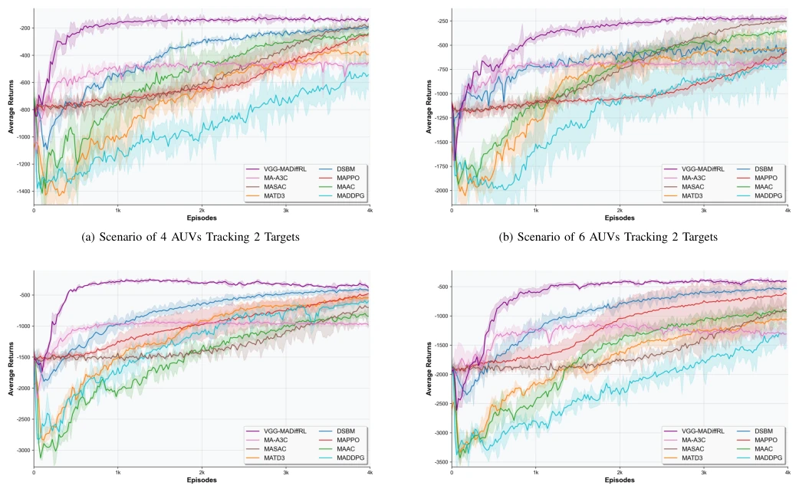
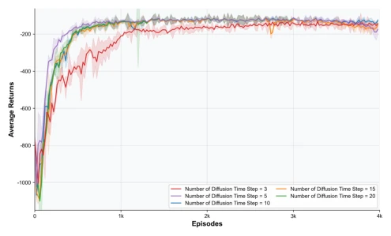
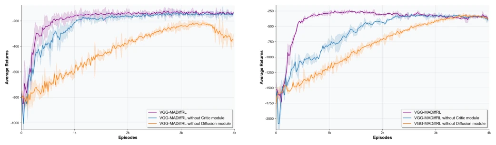
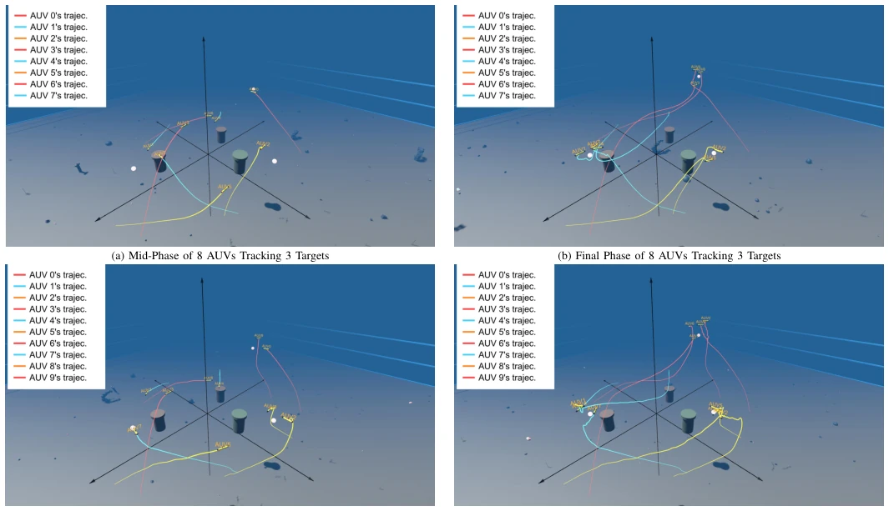
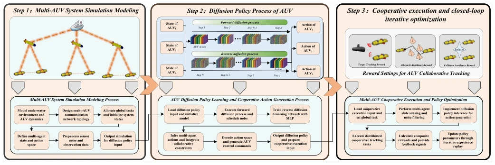

This paper adorns underwater multi-agent tracking with the glamorous veneer of "diffusion models", attempting to address the pain points of traditional reinforcement learning under dynamic topologies and weak communication. The authors devised a "value gradient guidance" trick, forcibly pulling the diffusion denoising process towards high-reward regions, which sounds very appealing. But to be honest, the underwater environment is fraught with pitfalls; stuffing computation-intensive algorithms like diffusion models into acoustic networks with extremely low bandwidth and extremely high latency, can the gap between "centralized" training and "decentralized" execution be bridged solely by gradient corrections in a few formulas? The experimental results indeed appear to converge quickly and have stable trajectories, but no deep analysis of robustness under extreme communication latency and packet loss rates is seen, feeling like "flowers in a greenhouse"; whether it can withstand real deep-sea storms remains a question mark. However, introducing value functions into diffusion sampling is indeed an interesting idea, at least it is smarter than pure random denoising.
Target tracking in underwater multi-AUV ad-hoc networks (MAAN) faces three major hurdles: first, underwater acoustic communication bandwidth is extremely narrow and topology changes dynamically fast, making it difficult for traditional methods to maintain collaborative consistency; second, existing MARL-based methods (e.g., [12], [13]) lack sufficient expressive power in deterministic policies when handling continuous joint action distributions, making it difficult to capture complex coupling relationships; third, diffusion models lack explicit value constraints during the reverse denoising process, causing sampled actions to easily deviate from high-reward regions, triggering training oscillations [17]. Although existing works such as ACL-SAC[18] and DDPG-SAC[19] perform adequately in single-agent or specific scenarios, in multi-agent collaborative continuous control under dynamic topologies, they still face problems of unstable training, slow convergence, and poor action sampling quality. Especially existing diffusion-based MARL methods (e.g., MADiff[21], HGCD[22]) mostly focus on offline learning or mixed action spaces, making it difficult to directly adapt to online, purely continuous, and communication-extremely-sensitive underwater tracking tasks. Therefore, a new architecture that combines diffusion model generation capabilities with value-guided stability is urgently needed.
The paper proposes MDCA (Multi-Agent Collaborative Control Architecture based on Value Gradient Guided Diffusion Policy) and VGG-MADiffRL algorithm. The overall process is divided into three layers: Global Intelligent Control Layer (responsible for task decomposition and topology maintenance), Local Online Training Layer (core RL algorithm execution area), and Physical Action Execution Layer (AUV execution and perception). In terms of data flow, the global layer issues commands, the local layer performs centralized training using the CTDE framework, and the execution layer generates actions based on diffusion policy and feeds back states. The core innovation lies in the VGG-MADiffRL algorithm: first, replace the traditional deterministic Actor with a diffusion model to build a generative policy for modeling complex continuous joint action distributions. Second, design a value gradient-guided reverse denoising mechanism, using Critic network gradients (∇Q) to correct action estimates during the denoising process, enabling sampled trajectories to point directly to high expected reward regions, rather than blind denoising. In specific implementation, adopt Twin Q-Networks combined with Soft Target Updates to alleviate Q-value overestimation and training oscillations. The loss function consists of two parts: one is Critic loss based on TD error, the other is Actor loss, the latter integrates Q-value guidance term (L_Q-guide) and policy gradient term (L_pg), the former is responsible for guiding direction during the sampling phase, the latter is responsible for optimizing the policy through differentiable sampling. This design avoids directly calculating high-order gradients, improving training stability.
Experiments are based on the OceanGym simulation environment, simulating tracking scenarios with different scales (4-10 AUVs) and different target counts (2-3 targets), and introducing hydrodynamic interference and acoustic communication constraints. Baselines compared various mainstream MARL algorithms. Evaluation metrics include average reward convergence speed, tracking accuracy, training stability, and performance under different diffusion steps. Results show that VGG-MADiffRL is significantly superior to baselines in convergence speed, and training curves are smoother, with higher tracking accuracy. Ablation experiments (Fig. 6) verify the effectiveness of the value gradient guidance term and Twin Critic structure, performance drops significantly after removing the guidance term. Additionally, experiments on different diffusion time steps (Fig. 5) indicate that the algorithm can balance generation quality and real-time performance by adjusting steps while maintaining certain computational overhead. However, experiments mainly focused on performance under ideal or semi-ideal communication conditions, analysis of communication overhead under extreme packet loss or high latency is slightly insufficient.

Fig. 4: Convergence Speed Evaluation

Fig. 5: Convergence Speed Across Different Numbers of Diffusion Time Steps in VGG-MADiffRL

Fig. 6: Ablation Evaluation

Fig. 7: Availability Evaluation
其他图片Other Figures

Fig. 3: Workflow of the Generative Multi-AUV MARL Algorithm